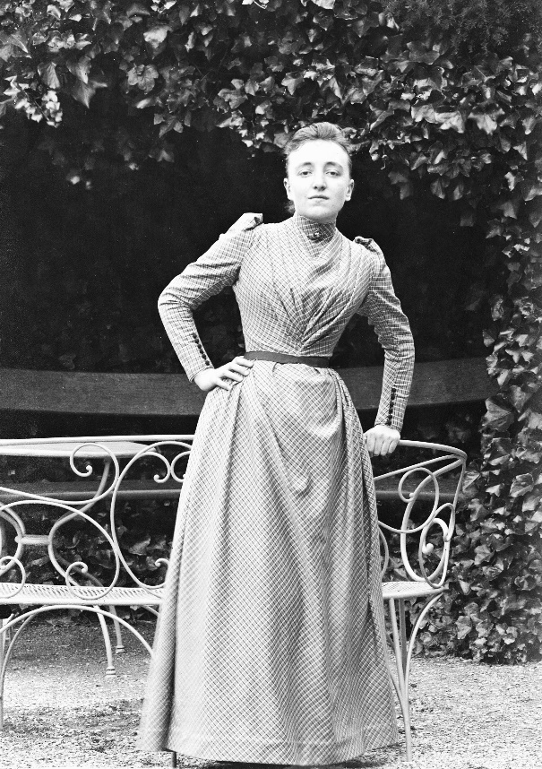
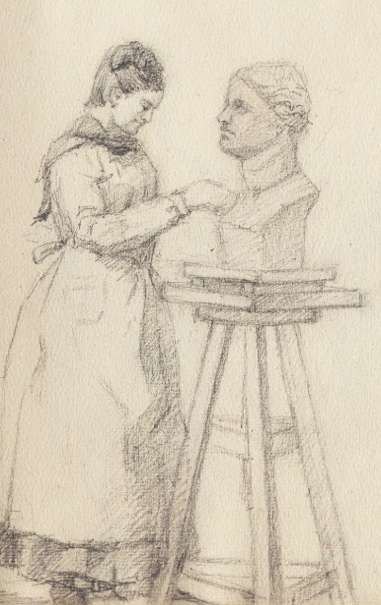
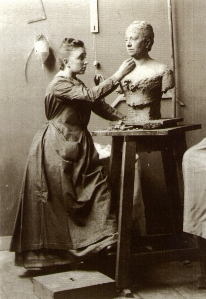
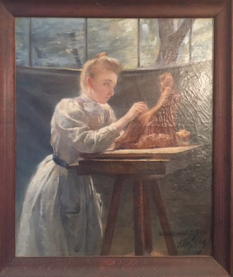

Biographie de Jeanne Jozon
Sculptrice et artiste Art nouveau (1868–1946)



Jeanne Jozon, jeune femme, dans le jardin familialRedécouvrir Jeanne Jozon
« Femme artiste Art nouveau »
Projet d’exposition porté par Jean-Noël Jeanneney et Pierre Allorant
Jeanne Jozon, sculptrice « Art nouveau », formée à l’École nationale des Beaux-Arts de Bourges puis à l’académie Julian, très appréciée des collectionneurs américains, est encore méconnue en France.
Cette artiste, née à Paris en 1868, a laissé à la fois une correspondance familiale et un courrier professionnel sur la longue durée, de son enfance durant les « Dix décisives » de la longue gestation de la Troisième République jusqu’à l’Occupation.
Une famille de la bourgeoisie républicaine
Son milieu familial, social, culturel et politique — la bourgeoisie républicaine des avocats, médecins et ingénieurs — est aisément approchable grâce aux abondants écrits laissés par :
Son père, Paul Jozon — Avocat aux conseils et député gambettiste
Son oncle, Marcel Jozon — « X-Ponts », vice-président du Conseil général des Ponts-et-Chaussées et beau-père du président du Sénat Jules Jeanneney
Son grand-père maternel, Adolphe Lacan — Bâtonnier du barreau de Paris, célèbre pour son Traité de la législation et de la jurisprudence des théâtres et pour sa plaidoirie contre Alexandre Dumas
Formation artistique

Croquis représentant Jeanne Jozon à l’ouvrageJeanne Jozon reçoit une double formation artistique d’exception :
École des Beaux-Arts de Bourges
Élève de Pètre à l’École nationale des Beaux-Arts de Bourges — récemment créée par le maire radical Eugène Brisson, son beau-père — elle y étudie aux côtés de Lucien Pénat, qui restera son ami toute sa vie.
Académie Julian à Paris
Elle poursuit sa formation auprès de Puech à la prestigieuse Académie Julian, l’une des rares institutions à accepter les femmes artistes à cette époque.
L’Atelier de la rue de Babylone

Jeanne Jozon sculptant un buste dans son atelier de la rue de BabyloneElle installe son atelier de sculpture rue de Babylone, derrière le Bon Marché, où elle créera la majeure partie de son œuvre.
Une œuvre diverse et prolifique

Portrait de Jeanne Jozon à l’œuvre, huile sur toileJeanne Jozon multiplie les œuvres les plus diverses, sur tous les supports et tous les matériaux :
Sculptures
- Moulages de marbres et de bronze
- Bas-reliefs de table composés de femmes à la mode, aux attitudes inspirées des bas-reliefs égyptiens
- Paysannes bretonnes et petits paysans berrichons
- Bustes de jeunes filles et de mères avec enfant symbolisant l’avenir
Œuvres emblématiques
- La charmeuse de serpent
- La joueuse de flûte
- La jeune fille jouant avec sa tortue
- Les petits paysans berrichons juchés sur un mur
- Buste de son ami Lucien Pénat
Céramiques
Modèles pour les manufactures de Sèvres et de Mehun-sur-Yèvre, en collaboration avec le céramiste Edmond Lachenal.
Dessins et pastels
La sculptrice est également une dessinatrice et une pastelliste de talent — des paysages bretons à la vallée de la Creuse et à Mehun.
Photographie
Elle réalise de magnifiques photographies de paysages et de portraits sur des plaques tirées au Bon Marché.
Reconnaissance et expositions
Jeanne Jozon participe très régulièrement aux expositions parisiennes et devient sociétaire de plusieurs salons.
Distinctions
- 1897 — Mention honorable au Salon pour À la fontaine
- 1898 — Nomination Officier d’Académie
- 1910 — Palmes Académiques
Rayonnement international
Au lendemain de la Grande Guerre, elle participe à l’exposition du Jouet français à New York en 1919, qui met en valeur l’entreprise patriotique de fabrication de jouets français substitués aux importations « Made in Germany ».
Enseignement
Elle enseigne la sculpture à une pléiade de jeunes élèves. Certains de ses dessins et croquis ont servi de modèle à des bijoux qu’elle fabrique et à des tapisseries.
Dernières années
Durant l’Occupation, elle réalise des natures mortes, son atelier de sculpture étant impraticable faute de charbon pour le chauffer.
Elle s’éteint en 1946.
Hommage posthume
Une année après son décès, le Palais des Beaux-Arts de la ville de Paris organise en 1947 une exposition en son hommage, avenue du Président Wilson.
Une artiste indépendante
Jeanne Jozon est une artiste femme qui assume explicitement son célibat comme unique moyen, dans la société bourgeoise et patriarcale de la « Belle Époque », de conserver son indépendance et de mener à bien son œuvre.
La nombreuse documentation archivée par les familles Jozon — contrats, photographies d’œuvres, correspondance familiale, carnets à dessins — ainsi que la centaine d’œuvres conservées permettent aujourd’hui de faire redécouvrir cette grande sculptrice trop longtemps oubliée.
Annexes
L’Académie Julian (1868–1946)
Académie privée de peinture et de sculpture ouverte par Rodolphe Julian en 1868, l’Académie Julian admet les femmes à partir de 1880 dans un atelier particulier au 51, rue de Vivienne.
Des peintres de renom dirigent les ateliers, tels William Bouguereau ou Jean-Paul Laurens. L’Académie acquiert une grande réputation internationale, fréquentée par de nombreux étudiants français et étrangers.
Fermée pendant la Seconde Guerre mondiale, l’Académie vend la plupart de ses ateliers en 1946. Rachetée en 1959, elle devient l’École supérieure d’Arts graphiques (ESAG).
Archives de l’Académie Julian
- 63AS/1 — Catalogue général des élèves (1870–1919)
- 63AS/10-11 — Dames : nationalités et patronymes (1868–1928)
- 63AS/12-14 — Inscriptions aux ateliers (1877–1907)
- 63AS/25-26 — Correspondance (1877–1938)
Bibliographie
Sur l’Académie Julian
Fehrer, Catherine, « The Julian Academy, Paris 1868–1939 », Shepherd Gallery, New York, 1989.
Sur l’exposition des jouets français
- French Toys, ill. André Hellé, Éditions de l’Avenir féminin, Paris, 1915
- Étrennes, jouets 1915–1916, Au Bon Marché, Paris, couverture par Poulbot